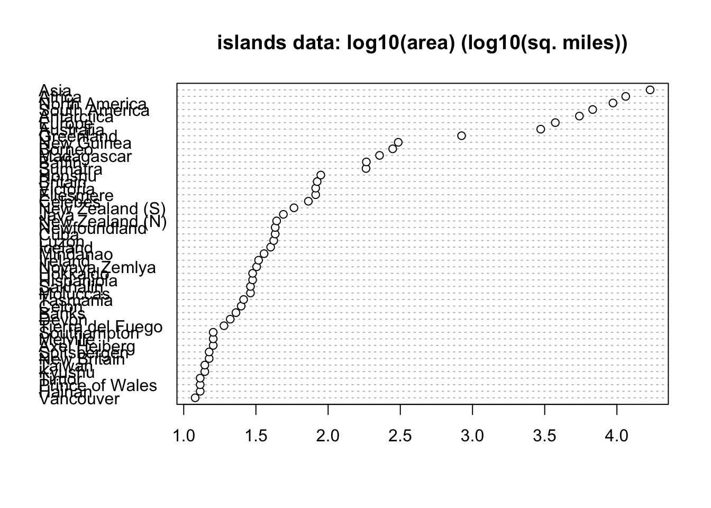
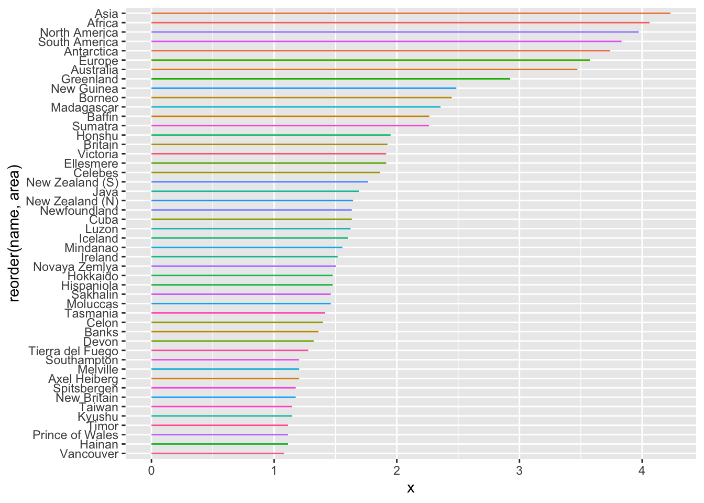
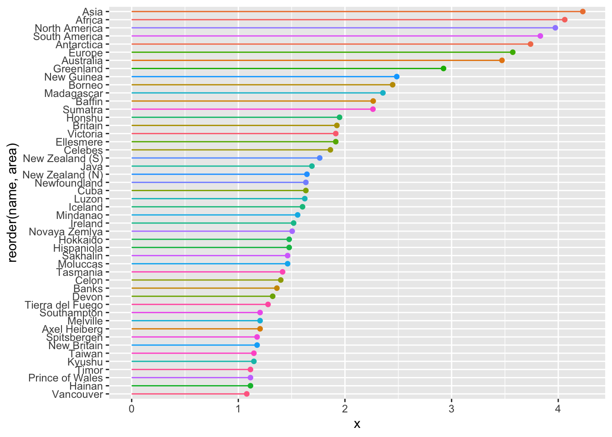
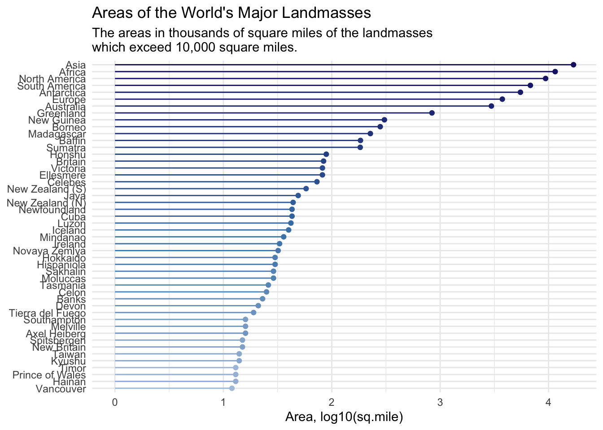

graphics.off()
rm(list = ls())
gc() used (Mb) gc trigger (Mb) limit (Mb) max used (Mb)
Ncells 585871 31.3 1339214 71.6 NA 669405 35.8
Vcells 1078489 8.3 8388608 64.0 16384 1851683 14.2Sean Ahn
January 21, 2024
When displaying a large number of datasets in a bar plot or line plot, it is difficult to distinguish between the data due to the phenomenon of overlapping lines.
A lollipop plot is an effective plot to alleviate this phenomenon.
if you read more information, refer to followings;
https://www.highcharts.com/docs/chart-and-series-types/lollipop-series
https://datavizproject.com/data-type/lollipop-chart/
https://towardsdatascience.com/lollipop-charts-2f748b90f6f0
I usually use the following code for initialization. If you don’t want to remove plots and/or variables, you can skip it.
used (Mb) gc trigger (Mb) limit (Mb) max used (Mb)
Ncells 585871 31.3 1339214 71.6 NA 669405 35.8
Vcells 1078489 8.3 8388608 64.0 16384 1851683 14.2We want to use as few packages (some might call them “libraries”) as possible. If possible, I’m going to use only the tidyverse package. Tidyverse is one of the most famous packages in R programming, and it’s really powerful and useful.
── Attaching core tidyverse packages ──────────────────────── tidyverse 2.0.0 ──
✔ dplyr 1.1.4 ✔ readr 2.1.4
✔ forcats 1.0.0 ✔ stringr 1.5.1
✔ ggplot2 3.4.4 ✔ tibble 3.2.1
✔ lubridate 1.9.3 ✔ tidyr 1.3.0
✔ purrr 1.0.2
── Conflicts ────────────────────────────────────────── tidyverse_conflicts() ──
✖ dplyr::filter() masks stats::filter()
✖ dplyr::lag() masks stats::lag()
ℹ Use the conflicted package (<http://conflicted.r-lib.org/>) to force all conflicts to become errorsWhen I write posts in my blog, I use the built-in dataset because I don’t want the reader to suffer by having to find the data from somewhere else.
The dataset I’ll be using in this post is shown below ⬇️ ⬇️ ⬇️.
Areas of the World’s Major Landmasses
Description The areas in thousands of square miles of the landmasses which exceed 10,000 square miles.
Usage
islands
Format
A named vector of length 48.
Source
The World Almanac and Book of Facts, 1975, page 406.
References
McNeil, D. R. (1977) Interactive Data Analysis. Wiley.
Africa Antarctica Asia Australia
11506 5500 16988 2968
Axel Heiberg Baffin Banks Borneo
16 184 23 280
Britain Celebes Celon Cuba
84 73 25 43
Devon Ellesmere Europe Greenland
21 82 3745 840
Hainan Hispaniola Hokkaido Honshu
13 30 30 89
Iceland Ireland Java Kyushu
40 33 49 14
Luzon Madagascar Melville Mindanao
42 227 16 36
Moluccas New Britain New Guinea New Zealand (N)
29 15 306 44
New Zealand (S) Newfoundland North America Novaya Zemlya
58 43 9390 32
Prince of Wales Sakhalin South America Southampton
13 29 6795 16
Spitsbergen Sumatra Taiwan Tasmania
15 183 14 26
Tierra del Fuego Timor Vancouver Victoria
19 13 12 82 islands is a numeric in the form of a named vector, so you can easily draw a dot plot using the built-in function as shown below.
Actually, it’s not bad. 🤔

It’s not ugly, but let’s make it a little easier to see and more pleasing to the eye.
I’ll be plotting with ggplot2 as before, so let’s change the numeric vector type of dataset to dataframe.
Importantly, I need to get the attributes as well.
To do this, I use the attributes function and the unlist function.
Warning: `data_frame()` was deprecated in tibble 1.1.0.
ℹ Please use `tibble()` instead.# A tibble: 48 × 2
name area
<chr> <dbl>
1 Asia 16988
2 Africa 11506
3 North America 9390
4 South America 6795
5 Antarctica 5500
6 Europe 3745
7 Australia 2968
8 Greenland 840
9 New Guinea 306
10 Borneo 280
# ℹ 38 more rowsI used the reorder function to rearrange them to look nice.
When visualizing a large number of data, it is helpful to order the data before visualizing it to help the reader understand it.
df |> ggplot(aes(x = 0, y = reorder(name, area), xend = log10(area), yend = name,
color = name)) +
geom_segment(show.legend = FALSE)
Let’s draw a dot that corresponds to the candy in lollipop.
This can be done simply by using geom_point to draw the dot at the end of the line.
df |> ggplot(aes(x = 0, y = reorder(name, area), xend = log10(area), yend = name,
color = name)) +
geom_segment(show.legend = FALSE) +
geom_point(aes(x = log10(area)), show.legend = FALSE)
Great! It looks much better!
We recommend using colors without duplication whenever possible, as using too many different colors or duplicating the same color can make it difficult to understand the data.
In this case, we have a lot of data and it’s hard to get the colors we want from the built-in palette, so we’ll create a custom color palette in the blue family and apply it.
To give a darker color to a larger area, I gave the reorder function the decreasing option so that Midnight Blue covers the largest area and Pale Sky Blue covers the smallest area.
df |> ggplot(aes(x = 0, y = reorder(name, area), xend = log10(area), yend = name,
color = reorder(name, area, decreasing = TRUE))) +
geom_segment(show.legend = FALSE) +
geom_point(aes(x = log10(area)), show.legend = FALSE) +
scale_color_manual(values = color_palette) +
labs(title = "Areas of the World's Major Landmasses",
subtitle = "The areas in thousands of square miles of the landmasses \nwhich exceed 10,000 square miles.",
x = "Area, log10(sq.mile)", y = NULL) +
theme_minimal()
Good job! 👍
END OF POST